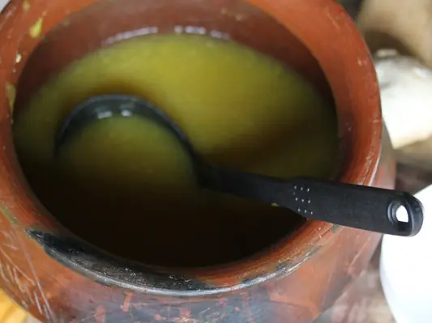

Фото: Ester Gasper Kimario, CC BY-SA 4.0

Крем-суп из тыквы
Нежный вегетарианский суп-пюре из тыквы со сливками
40 мин4 порц.201 ккал на порциюБ 4 · Ж 12 · У 19Интернациональная кухня
Продукты на 4 порц.
- Тыква800 г
- Картофель1 шт
- Морковь1 шт
- Лук репчатый1 шт
- Чеснок1 зуб.
- Вода3,5 стак.
- Сливки 20%150 мл
- Сливочное масло20 г
- Соль1 ч. л.
- Перец чёрный молотый1 щеп.
- Мускатный орех по желанию1 щеп.
- Семечки подсолнечника по желанию2 ст. л.
Как готовить
- Тыкву очистите от кожуры и семечек, нарежьте кубиками. Картофель, морковь и лук тоже нарежьте кубиками.
- Сложите овощи и чеснок в кастрюлю, залейте водой так, чтобы она едва покрывала овощи.
- Доведите до кипения на сильном огне, затем варите на среднем 20 минут, пока нож не входит в тыкву легко.
- Добавьте масло, соль, перец и мускатный орех. Измельчите блендером до гладкости.
- Влейте сливки и прогрейте на слабом огне 2-3 минуты, не доводя до кипения.
- Подавайте с подсушенными на сухой сковороде семечками.
Совет. Мускатная тыква (вытянутая) самая сладкая. Если суп слишком густой, добавьте горячей воды, если жидкий - проварите без крышки 5 минут.